Stock Exchange
Electronic stock exchange — order book, matching engine, sequencer, event sourcing on mmap, single-server microsecond latency, hot/warm failover with Raft, market data fairness (multicast) aur colocation. Wallet chapter ka event-sourcing aur Kafka ka log-thinking yahan apne extreme pe pahunchte hain.
Introduction
Exchange ka basic kaam: buyers aur sellers ko efficiently aur fairly match karna. NYSE, NASDAQ jaise bade exchanges.
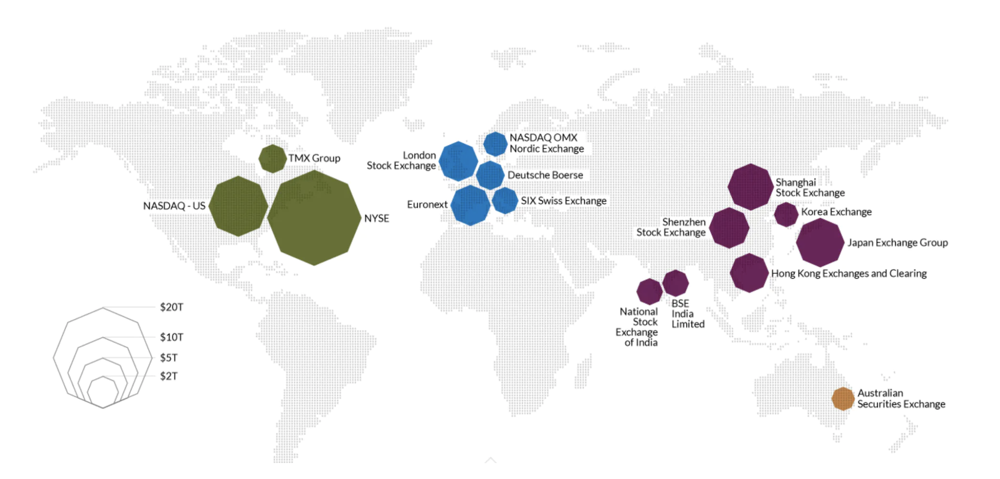
Step 1: Requirements aur scope
- Sirf stocks.
- Place + cancel order; sirf limit orders.
- Sirf normal trading hours.
- Clients orders place/cancel karein, matched trades real-time paayein, order book real-time dekhein.
- Scale: tens of thousands concurrent users, ~100 symbols, billions of orders/day.
- Risk checks (e.g. ek user din mein max 1M Apple shares).
- Wallet: order se pehle sufficient funds; pending orders ke funds withhold jab tak order final na ho.
Non-functional
- Availability ≥ 99.99% — din mein sirf 8.64 sec downtime.
- Fault tolerance + fast recovery.
- Latency: round-trip ms level, focus p99 — consistently high p99 kuch users ka experience kharab karta hai.
- Security: account management, KYC, public resources pe DDoS protection.
Back-of-the-envelope
- 1B orders/day, trading 09:30-16:00 = 6.5 h.
- QPS = 1B / (6.5 × 3600) ≈ 43,000; peak 5× ≈ 215,000 (market open pe volume sabse zyada).
Step 2a: Business knowledge 101
- Broker: users aur exchange ke beech (Robinhood, Fidelity).
- Institutional clients: bade volumes, specialised software; e.g. bade order ko split karna taaki market impact kam ho.
- Limit order: fixed price pe buy/sell; turant match na ho ya partially match ho sakta hai. Market order: price nahi, current market price pe turant.
- Bid: buyer ki highest price; Ask: seller ki lowest price.
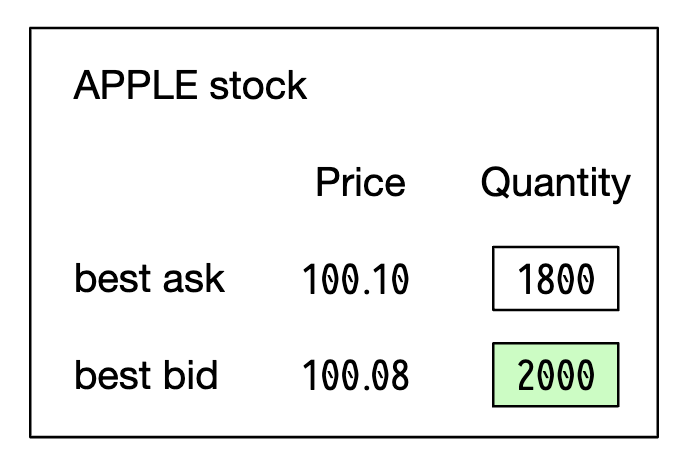
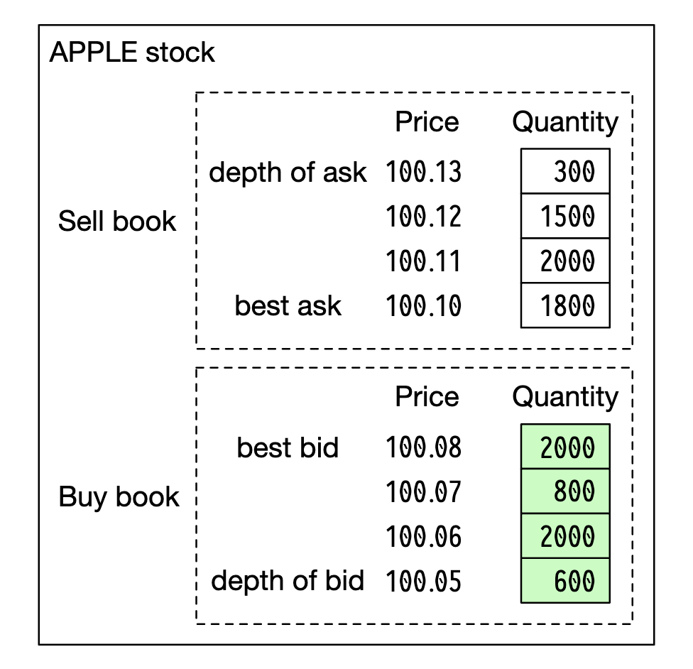
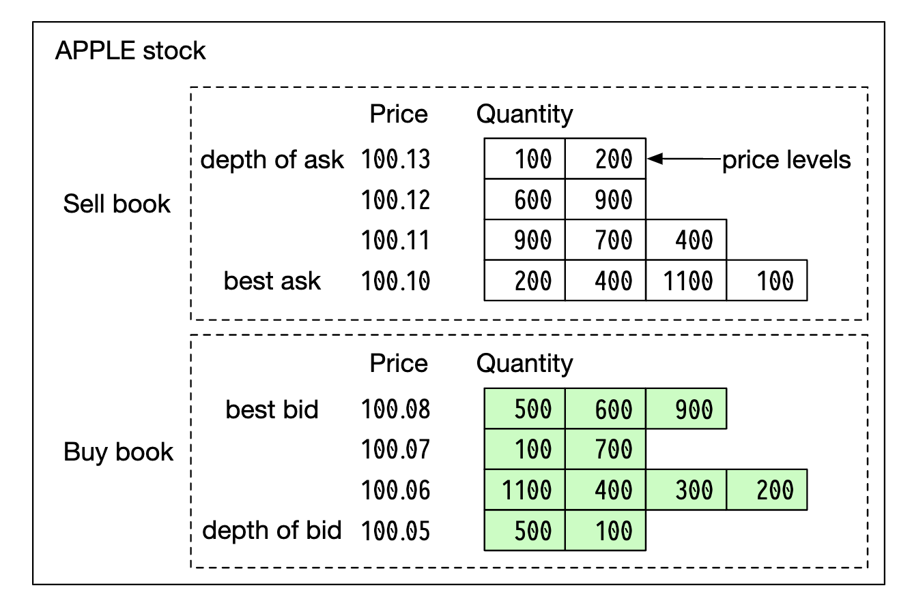
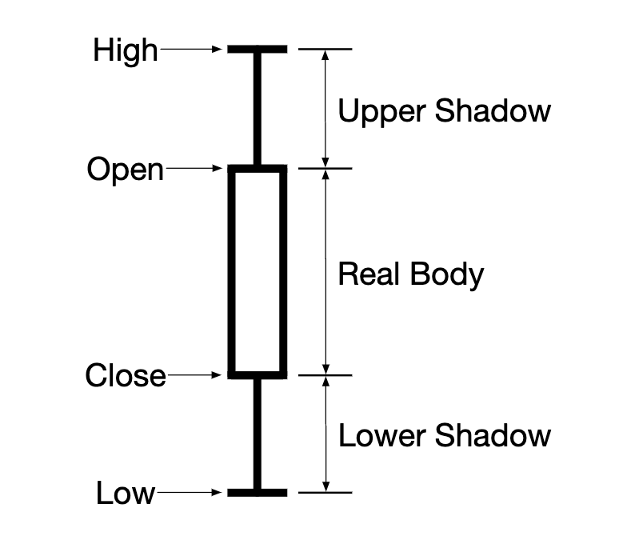
FIX protocol — securities transactions exchange karne ka industry standard:
8=FIX.4.2 | 9=176 | 35=8 | 49=PHLX | 56=PERS | 52=20071123-05:30:00.000 | 11=ATOMNOCCC9990900 | 20=3 | 150=E | 39=E | 55=MSFT | 167=CS | 54=1 | 38=15 | 40=2 | 44=15 | 58=PHLX EQUITY TESTING | 59=0 | 47=C | 32=0 | 31=0 | 151=15 | 14=0 | 6=0 | 10=128 |tag=value pairs: 8 BeginString (FIX.4.2), 9 BodyLength, 35=8 MsgType = ExecutionReport, 49/56 Sender/Target CompID (PHLX → PERS), 52 SendingTime, 11 ClOrdID (client ka order id — idempotency/correlation), 150/39 ExecType/OrdStatus (E = Pending Replace), 55=MSFT Symbol, 167=CS common stock, 54=1 Buy, 38=15 OrderQty, 40=2 Limit, 44=15 Price, 59=0 Day order, 151 LeavesQty 15, 14 CumQty 0, 6 AvgPx, 10 CheckSum. Payments wale ISO 8583 / SWIFT MT ke saath kaam kar chuke ho to yeh bilkul familiar lagega — tag-based financial messaging.Step 2b: High-level design
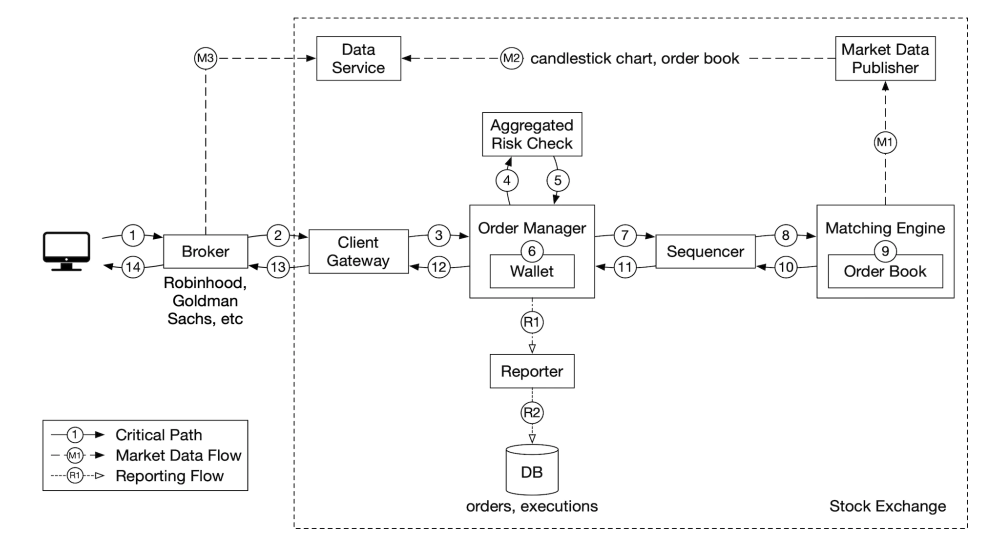
Trade flow: client → broker → client gateway (validate, rate limit, auth) → order manager (risk check, wallet funds) → sequencer → matching engine → match pe do executions (fills) — buy side aur sell side — sequenced, deterministic → wapas client.
Market data (M1-M3): executions stream → market data publisher (candlesticks, order book) → data service → brokers.
Reporter (R1-R2): orders + executions se reporting fields (client_id, price, quantity, order_type, filled_quantity, remaining_quantity) DB mein.
Trading flow critical path pe hai; baaki nahi — isliye latency requirements alag.
Matching engine (cross engine)
- Har symbol ka order book maintain.
- Buy/sell match → do fills. Fast aur accurate.
- Execution stream ko market data ke roop mein distribute.
- Matches deterministic order mein — high availability ki neenv.
Sequencer
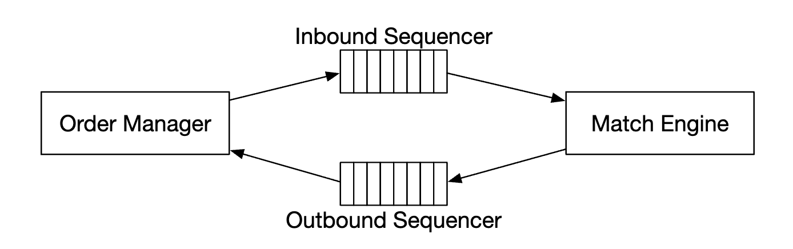
Kyun stamp: timeliness & fairness, fast recovery/replay, exactly-once guarantee. Conceptually Kafka (inbound + outbound queue) jaisa, lekin latency ke liye khud implement.
Order manager
- Risk check bhejta hai (e.g. daily volume < 1M).
- Wallet se funds verify (aur hold).
- Sequencer → matching engine; bandwidth ke liye sirf zaroori fields.
- Fills sequencer se leke gateway ke through brokers ko.
- Main challenge: state transitions (new → partially filled → filled / cancelled) → event sourcing.
available -= 1000, held += 1000. Partial fill 40 → held -= 400, cash ledger mein debit. Cancel remaining → held -= 600, available += 600. Har transition ek event, ledger double-entry mein — user beech ki state kharch nahi kar sakta.Client gateway
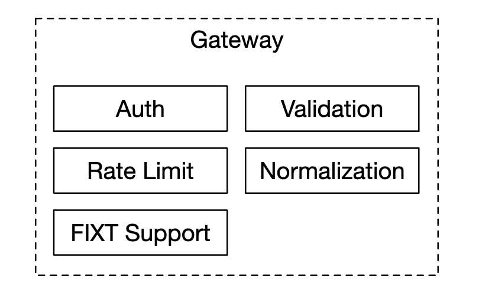
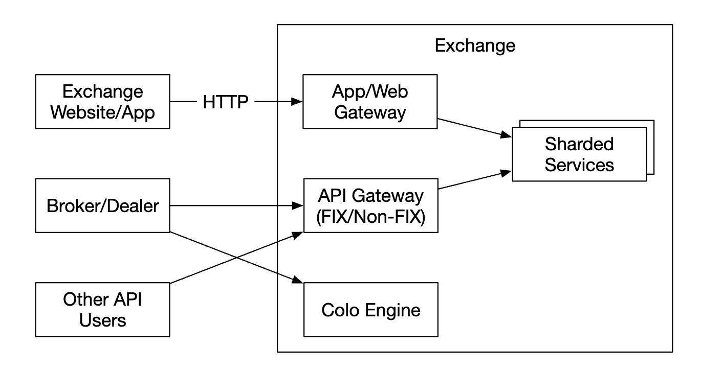
Market data flow
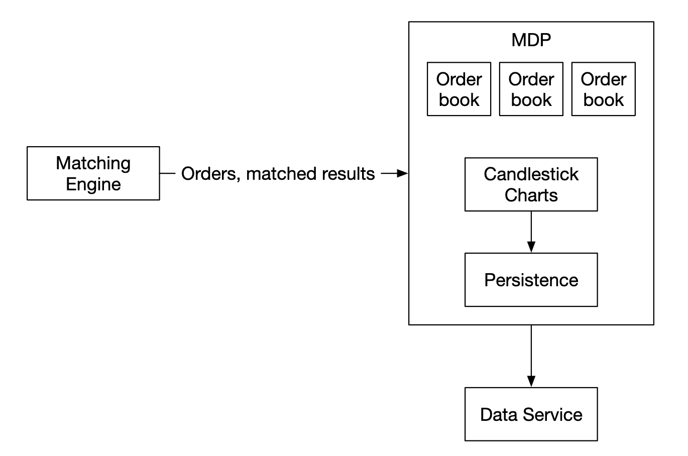
Reporting flow
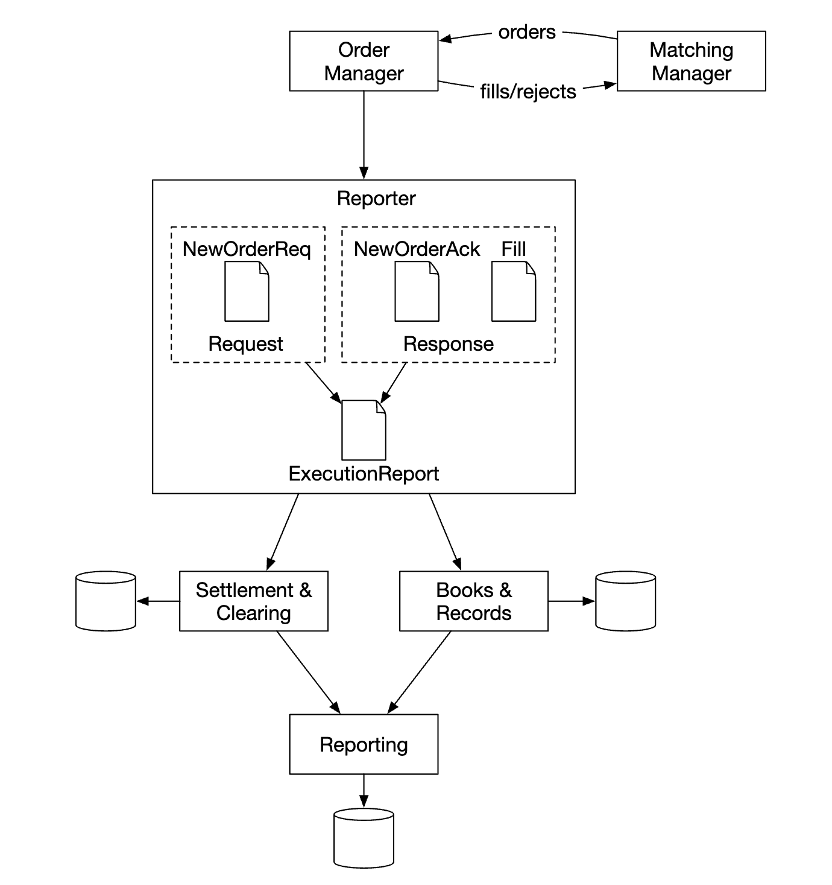
Trading history, tax reporting, compliance, settlements — sab yahin se.
Step 2c: API design
Brokers ke liye REST; institutional clients ke liye low-latency proprietary protocol.
POST /v1/order
symbol: String, side: buy|sell, price: Long, orderType: limit|market, quantity: Long
-> id: Long, creationTime: Long, filledQuantity: Long, remainingQuantity: Long,
status: new|canceled|filled, ...input fields
GET /execution?symbol={symbol}&orderId={orderId}&startTime={startTime}&endTime={endTime}
-> executions: [ { id, orderId, symbol, side, price: Long, orderType, quantity } ]
GET /marketdata/orderBook/L2?symbol={symbol}&depth={depth}
-> bids: [[price, size]], asks: [[price, size]]
GET /marketdata/candles?symbol={symbol}&resolution={seconds}&startTime=..&endTime=..
-> candles: [ { open, close, high, low } ]Long hai (achha — fixed-point/ticks, e.g. 100.08 = 1008 ticks of 0.01) lekin candles Double — inconsistent. Prices ke liye hamesha integer ticks/fixed-point; double sirf display layer mein. Payments ka "no floats for money" rule yahan bhi.Step 2d: Data models
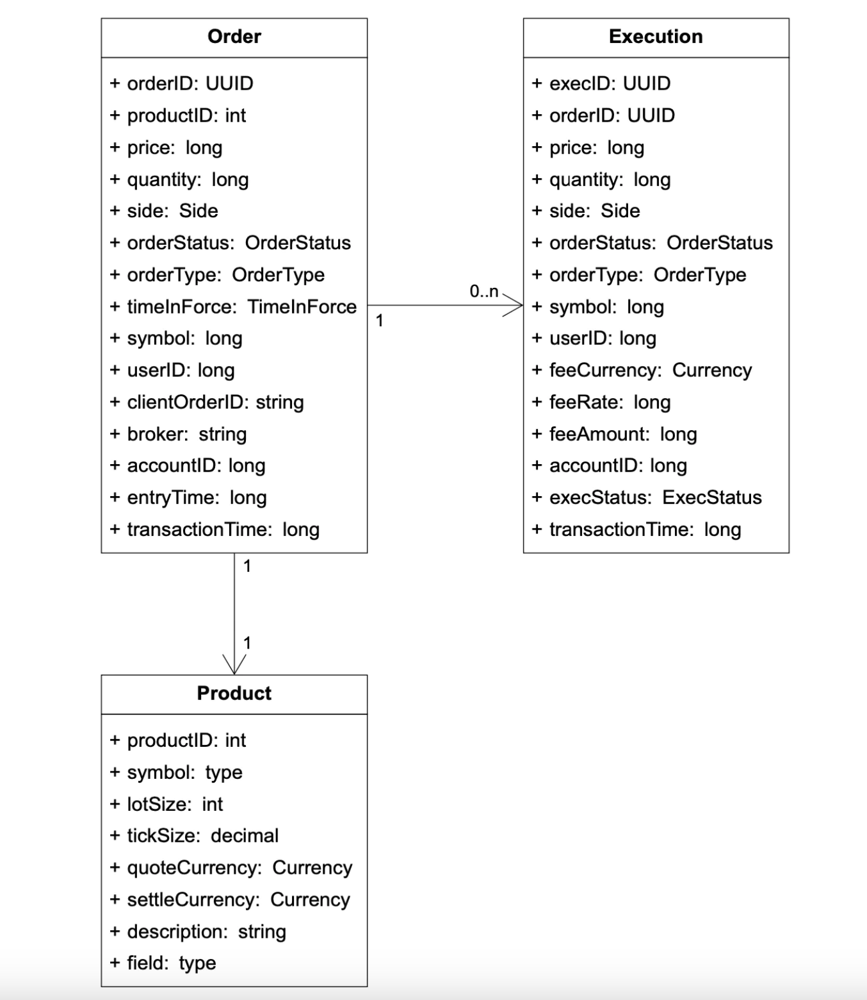
- Critical path pe orders/executions in-memory; sequencer se store aur recover.
- Reporter DB mein likhta hai.
- Executions market data ko → order book + candlesticks.
Order book
Requirements: price level pe volume O(1), fast add/execute/cancel, best bid/ask query, price levels iterate.
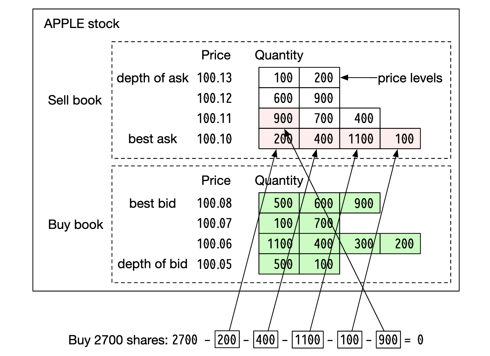
class PriceLevel {
private Price limitPrice;
private long totalVolume;
private List<Order> orders;
}
class Book<Side> {
private Side side;
private Map<Price, PriceLevel> limitMap;
}
class OrderBook {
private Book<Buy> buyBook;
private Book<Sell> sellBook;
private PriceLevel bestBid;
private PriceLevel bestOffer;
private Map<OrderID, Order> orderMap;
}List ki jagah doubly-linked list: new order = tail pe O(1); match = head se delete O(1); cancel = orderMap se O(1) lookup + prev/next pointers se O(1) delete.
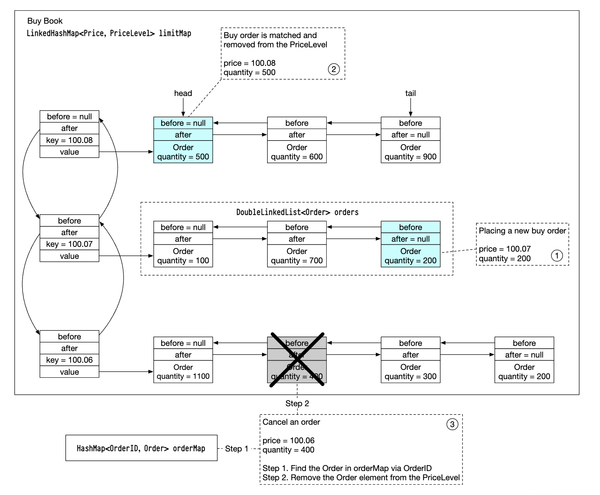
LinkedHashMap<Price, PriceLevel> limitMap — keys 100.08, 100.07, 100.06; har level ki value ek DoubleLinkedList<Order>. ① Naya buy 100.07 qty 200 tail pe add. ② 100.08 ka head order (500) match hoke remove. ③ Cancel: Step 1 HashMap<OrderID, Order> orderMap se order (100.06, qty 400) dhoondho, Step 2 linked list se nikaalo (X).TreeMap (O(log n)) ya, kyunki prices discrete ticks hain, ek array indexed by tick around current price (O(1)). Java mein boxing/GC avoid karne ke liye primitive collections (Agrona, Eclipse Collections) aur object pooling.Candlestick
class Candlestick {
private long openPrice, closePrice, highPrice, lowPrice, volume, timestamp;
private int interval;
}
class CandlestickChart {
private LinkedList<Candlestick> sticks;
}Memory optimisation: pre-allocated ring buffers, memory mein limited sticks, baaki disk pe. Real-time analytics ke liye in-memory columnar DB (e.g. KDB); market close ke baad historical DB.
Step 3a: Performance — sab kuch ek server pe
Modern exchanges aksar sab kuch ek bade server pe chalate hain. Latency kam karne ke do tarike: critical path pe tasks kam karo (logging bhi hata do!), aur har task ka time kam karo (network/disk hatao).
Original design (services over network + sequencer disk) = tens of milliseconds; target = tens of microseconds.
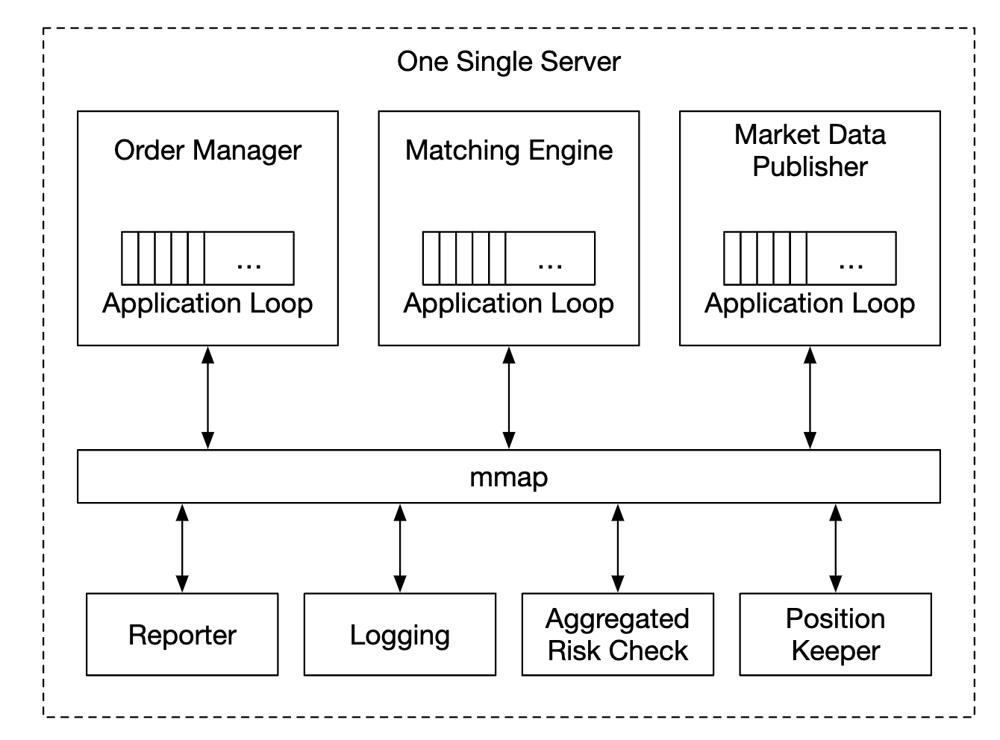
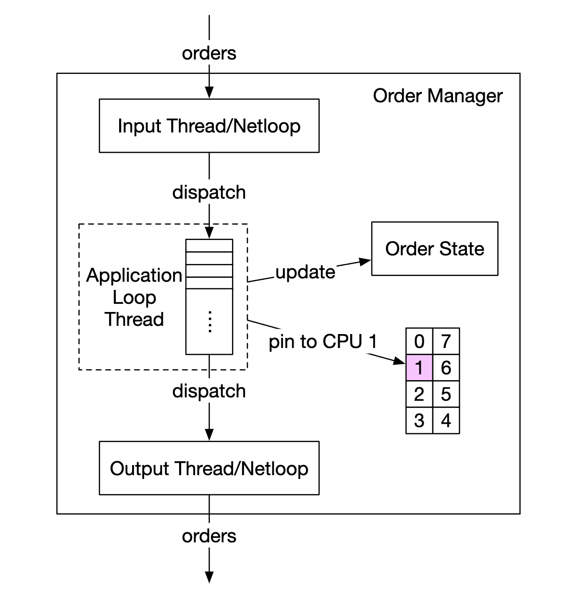
- Application loop: ek thread, ek CPU core pe pinned → no context switching, no lock contention.
mmap: file ko process memory mein map karta hai. File/dev/shm(shared memory, RAM-backed) mein banao → disk access hi nahi.
isolcpus), thread affinity, busy-spin wait strategies. Spring Boot yahan critical path pe nahi hota — gateway/admin/reporting side pe hota hai.Step 3b: Event sourcing
Detail ke liye Digital Wallet chapter ka event sourcing section dekho (notes ka link chapter28 likhta hai, sahi chapter 27 hai). Nutshell: current state ki jagah immutable state transitions store karo.
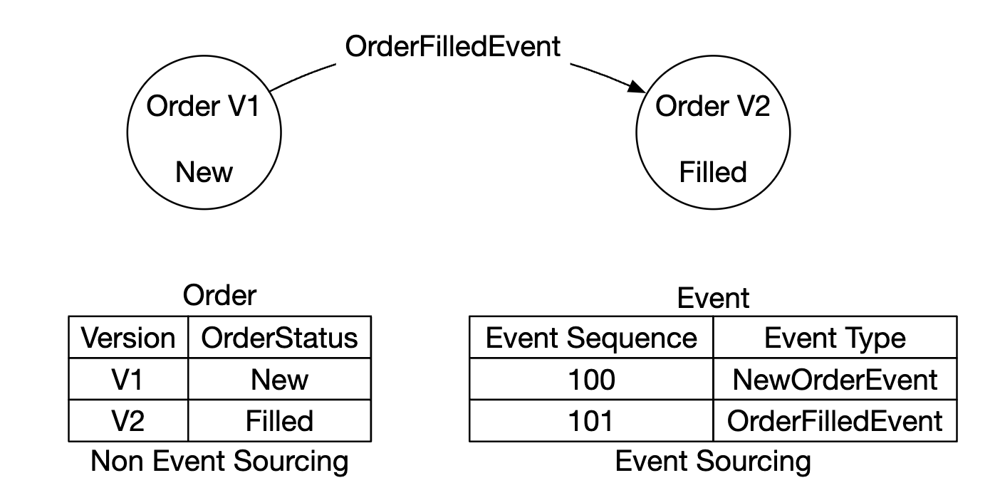
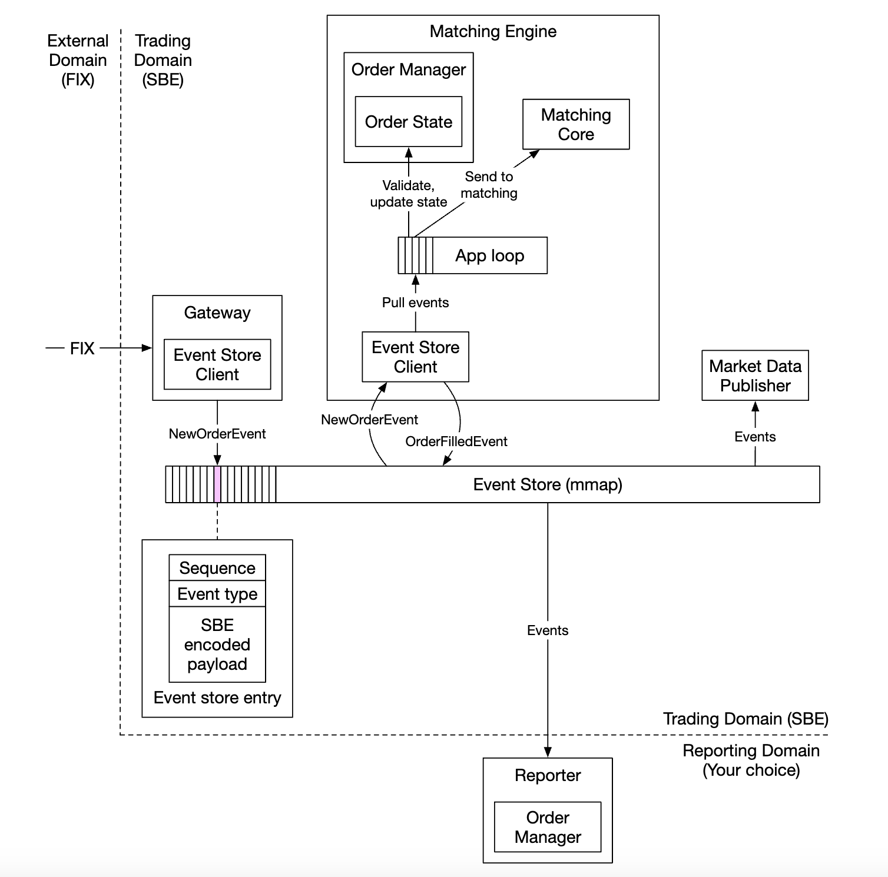
- Bahar FIX, andar compact SBE events.
- Order manager ek library hai jo har component embed karta hai — extra calls nahi; har component events replay karke same order state banata hai.
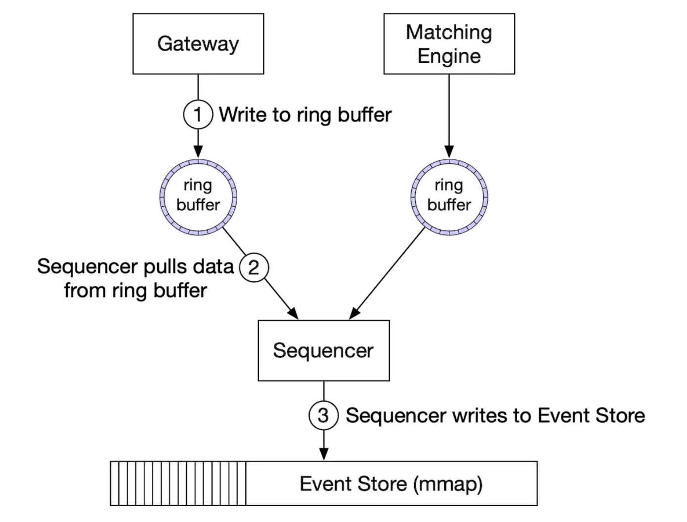
Step 3c: High availability
99.99% = 8.64 sec/din downtime. SPOFs pehchano: critical services (matching engine) ke standby backups, failure detection + failover automate. Stateless (gateway) horizontally scale.
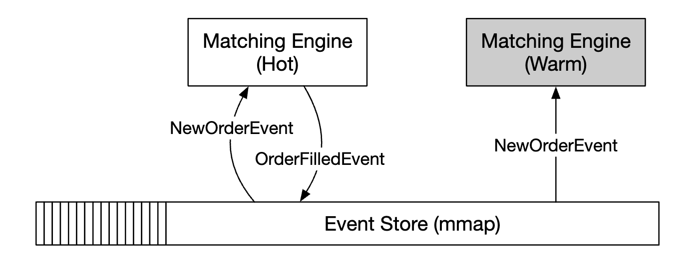
Heartbeats se primary down detect. Yeh ek server ke andar kaam karta hai; aage — poora server hot/warm replica, event store reliable UDP se replicate.
Step 3d: Fault tolerance
Warm bhi gaya to? Core data multiple cities ke DCs mein. Sawaal: kab/kaise failover, leader kaise chunein, RTO kitna, degraded mode mein kya chalega?
- Bug primary aur replicas dono ko maar sakta hai (same code, same events, deterministic = same crash!) → chaos engineering.
- Shuru mein manual failover jab tak failure modes samajh na aayein.
- Leader election: Raft.
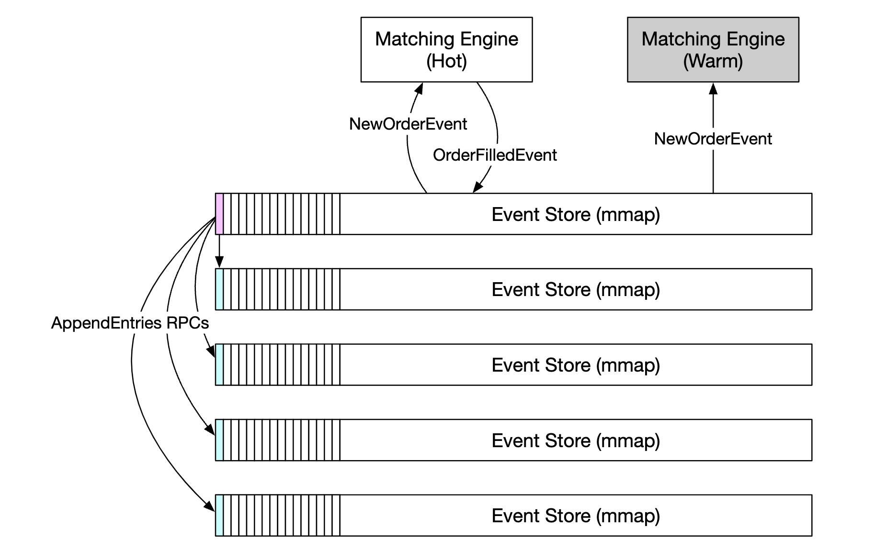
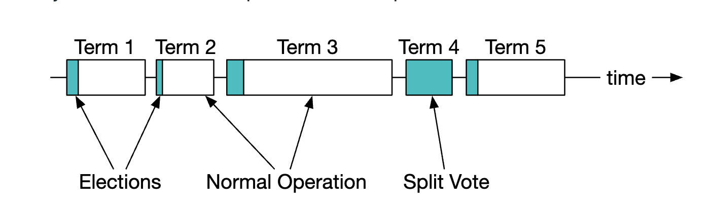
Raft ko visually samajhne ke liye: The Secret Lives of Data — Raft visualization — step-by-step animation: nodes follower → candidate → leader kaise bante hain, election timeout, heartbeats, log replication aur network partition ke baad kya hota hai. Kaise padhein: har slide pe "Continue" dabao aur dekho ki commit sirf majority ack ke baad hota hai. Detail: links guide.
Loss tolerance: exchange ke liye data loss unacceptable → frequent backup + Raft replication.
Step 3e: Matching algorithm
Context handleOrder(OrderBook orderBook, OrderEvent orderEvent) {
if (orderEvent.getSequenceId() != nextSequence) {
return Error(OUT_OF_ORDER, nextSequence);
}
if (!validateOrder(symbol, price, quantity)) {
return ERROR(INVALID_ORDER, orderEvent);
}
Order order = createOrderFromEvent(orderEvent);
switch (msgType):
case NEW: return handleNew(orderBook, order);
case CANCEL: return handleCancel(orderBook, order);
default: return ERROR(INVALID_MSG_TYPE, msgType);
}
Context handleNew(OrderBook orderBook, Order order) {
if (BUY.equals(order.side)) return match(orderBook.sellBook, order);
else return match(orderBook.buyBook, order);
}
Context handleCancel(OrderBook orderBook, Order order) {
if (!orderBook.orderMap.contains(order.orderId)) {
return ERROR(CANNOT_CANCEL_ALREADY_MATCHED, order);
}
removeOrder(order);
setOrderStatus(order, CANCELED);
return SUCCESS(CANCEL_SUCCESS, order);
}
Context match(OrderBook book, Order order) {
Quantity leavesQuantity = order.quantity - order.matchedQuantity;
Iterator<Order> limitIter = book.limitMap.get(order.price).orders;
while (limitIter.hasNext() && leavesQuantity > 0) {
Quantity matched = min(limitIter.next.quantity, order.quantity);
order.matchedQuantity += matched;
leavesQuantity = order.quantity - order.matchedQuantity;
remove(limitIter.next);
generateMatchedFill();
}
return SUCCESS(MATCH_SUCCESS, order);
}Price level ke andar FIFO (price-time priority).
min(next.quantity, order.quantity) galat — leavesQuantity se min lo. (3) next do baar call = do alag orders. (4) Resting order partially fill ho to remove nahi, quantity kam karo. (5) Leftover quantity book mein rest karni chahiye. Corrected sketch:
while (leaves > 0 && opp.bestLevel() != null && crosses(order, opp.bestLevel().price)) {
PriceLevel lvl = opp.bestLevel();
Order resting = lvl.head();
long qty = Math.min(leaves, resting.leaves());
emitFill(order, resting, lvl.price, qty, seq.next()); // two executions: buy & sell
resting.fill(qty); order.fill(qty); leaves -= qty;
if (resting.leaves() == 0) lvl.removeHead();
if (lvl.isEmpty()) opp.removeLevel(lvl);
}
if (leaves > 0) ownSide.rest(order); // limit order book mein baith jaata haiStep 3f: Determinism
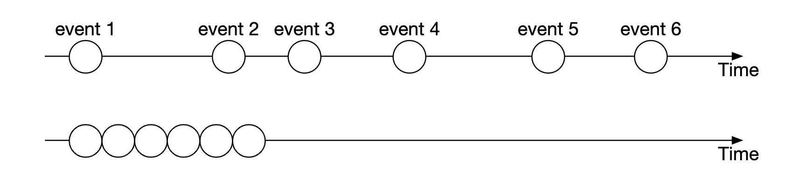
- Functional determinism: sequencer se guaranteed — actual time matter nahi karta.
- Latency determinism: p99/p99.99 track karo. Java mein GC pauses spikes ke bade culprits.
Step 3g: Market data publisher
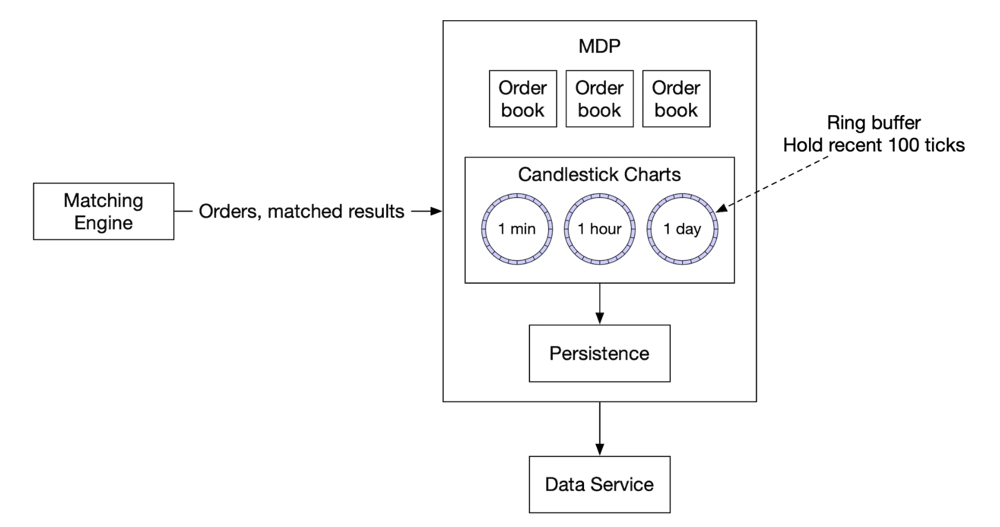
Ring buffer: fixed-size circular queue, preallocated (no allocation), lock-free. Padding se sequence number apni cache line mein — false sharing nahi.
Step 3h: Fairness, multicast, colocation, security
Market data sab subscribers ko ek saath milna chahiye — jo pehle paaye usko unfair edge. Transport: unicast (1→1), broadcast (1→subnet), multicast (1→set of hosts across subnets). Multicast + reliable UDP (retransmissions) se sabko theoretically same time pe.
Colocation: brokers ke servers exchange ke DC mein — latency drastically kam; VIP service.
DDoS: public aur private services alag; rarely-updated data cache karo; URLs cacheable banao — e.g. https://my.website.com/data/recent better hai https://my.website.com/data?from=123&to=456 se — dono sirf illustrative example URLs hain (real site nahi): pehla fixed path CDN pe ek hi cached object hai, doosre mein attacker har request pe from/to badal ke cache bypass karke origin pe load daal sakta hai. Detail: links guide. Allowlist/blocklist + rate limiting.
Step 4: Wrap up
- Sab exchanges ek bade server pe nahi chalte, lekin kuch abhi bhi.
- Modern exchanges cloud infra aur (crypto mein) AMMs (automatic market makers) bhi use karte hain jahan order book hi nahi hota.
- Scope: stocks, limit orders, place/cancel, 100 symbols, 43k avg / 215k peak QPS, p99 latency, 99.99%.
- Business 101 (bid/ask, L1/L2/L3, candlestick) — 2 minute, vocabulary dikhao.
- Teen flows diagram: critical trading path vs market data vs reporting.
- Matching engine + order book data structure (doubly-linked list + orderMap + price levels) + sequencer.
- Deep dive: single server, mmap bus, pinned application loop, event sourcing, single-writer sequencer.
- HA: hot/warm deterministic replicas, Raft across servers, RTO, chaos.
- Fairness: multicast, colocation; DDoS.
Follow-up questions
- Q: 100 symbols se 10,000 symbols?
- Symbols ko matching engine instances mein shard (symbol = natural partition key; cross-symbol matching nahi hota). Har shard ka apna sequencer + hot/warm.
- Q: Cancel aur fill race?
- Sequencer decide karta hai — jo pehle sequence hua woh jeeta. Fill pehle → cancel reject (CANNOT_CANCEL_ALREADY_MATCHED).
- Q: Duplicate order (broker retry)?
clientOrderID(FIX tag 11) per broker unique — gateway/order manager dedupe.- Q: Market open pe 5× spike?
- Opening auction (call auction) — orders collect karke ek price pe uncross, continuous matching baad mein; plus gateway rate limits per broker.
- Q: End of day settlement?
- Reporter → clearing house (T+1 US mein), books & records; trades vs positions vs cash ka recon — Ch26 jaisa.
Key Takeaways
- Exchange = deterministic state machine over a totally-ordered event log (sequencer).
- Order book: price levels + doubly-linked FIFO queues + orderMap → O(1) add/match/cancel.
- Critical path ko minimal rakho; market data aur reporting off-path.
- Microseconds ke liye: single server, mmap (/dev/shm), pinned single-threaded loops, ring buffers, no locks, no GC on hot path.
- Event sourcing → replay, hot/warm replicas with identical state, fast failover; Raft across servers.
- Prices integer ticks mein; FIX bahar, binary (SBE) andar.
- Fairness: multicast + reliable UDP, colocation; DDoS: cacheable URLs, isolation, rate limits.